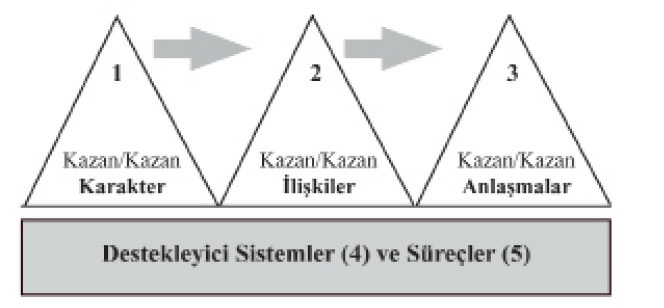
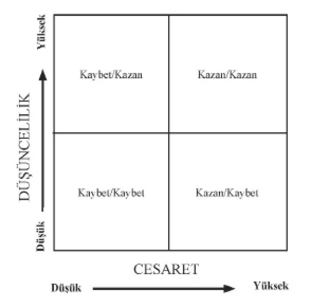

dolarlık
bir
sözleşmeden
vazgeçmiş oldum. Bu, mali bakımdan intihara benzer bir şeydi. Ama ilke doğru olduğu takdirde, uzun vadede çok daha kazançlı çıkacağıma inanıyordum.
“Üç ay sonra yeni başkan beni tekrar aradı. ‘Veri işlemlerimizde değişiklikler yapacağım ve sizinle çalışmak istiyorum,’ dedi. Sonra da 240.000 dolarlık bir sözleşmeye imzasını attı.”
Karşılıklı bağımlı gerçekliklerde Kazan/Kazan’dan daha azı, zayıf bir ikinci seçenektir ve uzun vadeli ilişkileri etkiler. Bu etkinin bedelini dikkatle düşünmek gerekir. Gerçek bir Kazan/Kazan’a ulaşamıyorsanız, çoğu zaman Anlaşma Yok seçeneğini yeğlemeniz daha iyi olacaktır.
Kazan/Kazan ya da Anlaşma Yok, aile ilişkilerinde inanılmaz bir duygusal özgürlük sağlar. Örneğin, aile üyeleri herkesin hoşuna gidecek bir video kaset üzerinde anlaşamıyorsa, başka bir şey yapmaya karar verebilir. Bu Anlaşma Yok seçeneği, bazı kişilerin diğerlerinin sıkılması pahasına akşamın keyfini çıkarmalarından daha iyidir.
Ailesiyle yıl ardır şarkı söyleyen bir hanım arkadaşım var. Çocuklar küçükken, arkadaşım aranjmanı yapar; kostümleri diker, piyanoda eşlik eder ve performansı yönetirdi.
Çocuklar büyüdükçe, müzik zevkleri değişmeye başladı ve söyledikleri şarkılarla giysileri konusunda daha fazla söz sahibi olmak istediler. Yönetilmeye karşı direnmeye başladılar.
Arkadaşım, tek başına yıl arca konser verdiği için bu konuda deneyimliydi ve şarkı söylemeyi planladıkları
huzur
evlerindeki
yaşlı
kişilerin
ihtiyaçlarını
daha
iyi
bildiğinden,
çocuklarının
birçoğunun
uygun
olmadığını
düşünüyordu. Ama yine de, onların düşüncelerini ifade etme ve karar verme sürecinin bir parçası olma ihtiyaçlarını anlıyordu.
Bu nedenle Kazan/Kazan ya da Anlaşma Yok yolunu seçti. Çocuklarına, herkesi memnun edecek bir anlaşmaya varmak istediğini söyledi, aksi takdirde yeteneklerinin tadını çıkarmak için başka yol ar arayabilirlerdi. Sonuç olarak, bir Kazan/Kazan anlaşması hazırlamaya çalışırken, herkes fikirlerini ve duygularını özgürce dile getirdi. Mutabık kalsalar da kalmasalar da, duygusal zorlama olmayacağını biliyorlardı.
Kazan/Kazan ya da Anlaşma Yok yaklaşımının en gerçekçi olduğu nokta, bir iş ilişkisi ya da girişiminin başlangıcıdır. Devam eden bir iş ilişkisinde, Anlaşma Yok uygun bir seçenek olmayabilir. Özel ikle aile işlerinde ya da başlangıçta dostluk temeline dayanan işlerde ciddi sorunlara yol açabilir.
İnsanlar, ilişkiyi korumak için bazen yıl ar boyunca art arda özveride bulunur ve Kazan/Kazan’dan söz ederken Kazan/Kaybet ya da Kaybet/Kazan diye düşünürler. Bu, hem insanlar hem de iş bakımından ciddi
sorunlar
yaratır;
özel ikle
de
rakipler
Kazan/Kazan ve sinerjiye dayanarak çalışıyorsa.
Anlaşma Yok seçeneği olmadığında, bu tür pek çok iş bozulmaya başlar; ya başarısızlığa uğrar ya da yönetimin profesyonel ere devredilmesi gerekir.
Deneyimler şunu göstermiştir: Aile içinde ya da dostlar arasında bir iş kurulacağı zaman, ileride bir Anlaşma Yok olasılığının çıkabileceğini kabul edip, bir tür “al/sat” anlaşması yapmak genelde en iyisidir.
Böylece
iş,
ilişkiyi
kökünden
mahvetmeden
gelişebilir.
Kuşkusuz, Anlaşma Yok seçeneğinin uygun olmadığı bazı ilişkiler de vardır. Bir Anlaşma Yok seçeneği uğruna çocuğumu ya da eşimi terk etmem.
(Gerekiyorsa, Kazan Kazan’ın daha düşük düzeyli bir şekli olan uzlaşma yoluna gitmek daha iyidir.) Ama pek çok durumda, görüşmeye tam bir Kazan/Kazan ya da Anlaşma Yok tutumuyla başlamak mümkündür.
Bu tutumun sağladığı özgürlük ise inanılmayacak kadar büyüktür.
KAZAN/KAZAN’IN BEŞ BOYUTU
Kazan/Kazan diye düşünmek, kişiler arası liderlik alışkanlığıdır. Başkalarıyla ilişkilerimizde, insana özgü o eşsiz yetilerin –özbilinç, hayal gücü, vicdan ve özgür irade– her birinin kul anılmasını gerektirir.
Birbirinden öğrenmeyi, birbirini etkilemeyi ve karşılıklı yararları içerir.
Bu karşılıklı yararların yaratılması, hem büyük bir cesaret hem de düşüncelilik gerektirir; özel ikle de Kazan/Kaybet senaryosuna çok bağlı kimselerle etkileşim halindeysek.
Bu alışkanlığın kişiler arası liderlik ilkelerini içermesinin nedeni de budur. Kişiler arası etkili liderlik için vizyon, proaktif inisiyatif ve güvenliğin yanı sıra, ilke merkezli kişisel liderlikten kaynaklanan rehberlik, bilgelik ve güç de gereklidir.
Kazan/Kazan ilkesi bütün ilişkilerimizde başarının temelidir ve yaşamın karşılıklı bağımlı beş boyutunu kapsar. Karakterle başlar, ilişkilere doğru ilerler, b und a n anlaşmalar
doğar. Yapı
ve sistemlerin
Kazan/Kazan’a dayalı olduğu bir ortamda beslenir ve süreci içerir; Kazan/Kazan sonuçlarına Kazan/Kaybet ya da Kaybet/Kazan yoluyla ulaşamayız.
Arka sayfadaki diyagram bu beş boyutun birbirleriyle olan ilişkilerini gösteriyor: 
Şimdi bu boyutların her birini sırayla inceleyelim.
Karakter
Karakter, Kazan/Kazan’ın temelidir ve geride kalan her şey bu temelin üzerine kurulur. Kazan/Kazan paradigmasının özünde üç karakter özel iği vardır: KİŞİSEL BÜTÜNLÜK. Kişisel bütünlüğü daha önce, kendimize biçtiğimiz değer olarak tanımlamıştık. 1., 2. ve 3. Alışkanlıklar kişisel bütünlüğü geliştirip sürdürmemize yardım eder. Değerlerimizi açıkça saptayıp, her şeyi günü gününe o değerlerin etrafında proaktif bir biçimde düzenleyip uygularken, anlamlı sözler vererek, vaatlerde bulunup bunlara bağlı kalarak özbilinci ve özgür iradeyi geliştiririz.
Kazan’ın tam anlamıyla ne olduğunu –en köklü değerlerimizle
neyin
uyum
sağladığını–
bile
bilmiyorsak, kendi yaşamımızda bir Kazan seçeneği oluşturmamız imkânsızdır. Başkalarına olduğu kadar kendimize
de
sözler
verip
bunlara
bağlı
kalamıyorsak, vaatlerimiz anlamsızlaşır. Bunu biliriz, başkaları da bilir. İkiyüzlülüğü sezer ve ihtiyatlı davranmaya başlarlar. Güven temeli yoktur ve Kazan/Kazan, etkisiz ve yapay bir tekniğe dönüşür.
Kişisel bütünlük, bu temelin sacayağıdır.
OLGUNLUK.
Olgunluk, cesaretle
düşüncelilik
arasındaki dengedir. Kişi, duygu ve inançlarını, başkalarının
duygu
ve
inançlarına
gösterdiği
düşüncelilikle dengeleyerek ifade edebiliyorsa, olgundur; özel ikle de konu her iki taraf için önemliyse.
İşe alma, terfi ettirme ve eğitim amaçlı psikoloji testlerinin birçoğunu incelerseniz, bu tür bir olgunluğu değerlendirmek için tasarlandıklarını görürsünüz.
Buna verilen ad, ister ego gücü/empati dengesi, ister kendine duyulan güven/başkalarına duyulan saygı dengesi, ister insanlara gösterilen ilgi/işe gösterilen ilgi dengesi, ister insanlar arası ilişki analizi dilinde “ben iyiyim, sen iyisin”, ya da yönetim grafiği (management grid) dilinde 9.1, 1.9, 5.5, 9.9 olsun; aranan nitelik, benim ‘cesaret ve düşüncelilik dengesi’ diye nitelendirdiğim şeydir.
Bu niteliğe duyulan saygı; insani etkileşim, yönetim ve liderlik kuramının derinlerine kök salmıştır. Ü/ÜY
Dengesi’nin derin bir temsilidir. Cesaret, altın yumurtayı elde etmeye odaklı olabilirken, düşüncelilik, diğer paydaşların uzun vadeli iyiliğiyle ilgilenir.
Liderliğin temel görevi, tüm paydaşların yaşam standartını ve kalitesini yükseltmektir.
Pek çok insan ‘ya şu/ya bu’ bağlamında düşünür. İyi davranıyorsanız,
sert
değilsinizdir.
Oysa
Kazan/Kazan
hem
iyi...
hem
de
serttir.
Kazan/Kaybet’ten iki kat serttir. Kazan/Kazan seçeneği için yalnız iyi değil, cesaretli de olmanız gerekir. Yalnız empatik değil, güvenli de olmanız gerekir. Yalnız duyarlı ve düşünceli değil, yürekli de olmanız gerekir. Bunu yapmak; yani, cesaretle düşüncelilik
arasında
denge
kurmak,
gerçek
olgunluğun özü ve Kazan/Kazan’ın da temelidir.
Çok cesaretli olduğum halde pek düşünceli değilsem, nasıl düşünürüm? Kazan/Kaybet diye.
Güçlü ve egoma bağlı olurum. İnançlarımı savunacak cesaretim vardır, ama sizinkilere karşı pek düşünceli 
davranmam.
İçsel olgunluk ve duygusal güç eksikliğimi telafi etmek için mevki ve nüfuzumdan, kimliğimden, yaşımın büyüklüğünden, yakın ilişkilerimden ödünç kuvvet alabilirim.
Çok düşünceliysem ve fazla cesaretim yoksa, Kaybet/Kazan diye düşünürüm. İnançlarınıza ve isteklerinize
karşı
öyle
düşünceliyimdir
ki,
kendiminkileri dile getirip gerçekleştirme cesaretini bulamam.
Hem yüksek cesaret hem de düşüncelilik, Kazan/Kazan için çok önemlidir. Gerçek olgunluğun göstergesi dengedir. Ona sahipsem, dinleyebilir, empati göstererek anlayabilir, ama aynı zamanda cesaretle karşı da çıkabilirim.
BOLLUK ZİHNİYETİ. Kazan/Kazan için gerekli olan üçüncü karakter özel iği, Bol uk Zihniyeti’dir; yani, ortada herkese yetecek kadar bir şeyler olduğu paradigması.
Çoğu kişi, benim Kıtlık Zihniyeti diye adlandırdığım senaryoya sımsıkı bağlıdır. Onlar hayatta her şeyin belirli miktarda olduğunu düşünürler. Sanki dünyada tek bir pasta vardır ve biri o pastadan büyük bir dilim alacak olursa, başkalarına daha az kalacaktır. Kıtlık Zihniyeti, hayatın sıfır-toplam paradigmasıdır; birinin kazancının, ötekinin kaybı olduğu varsayımına dayanır.
Kıtlık Zihniyeti’ne sahip insanlar, şöhret ve başarıyı, güç ya da kazancı, bunların sağlanmasına yardım eden kişilerle bile paylaşmakta zorluk çekerler.
Ayrıca başkalarının –hatta bazen özel ikle kendi aile üyelerinin ya da yakın dost ve ortaklarının– başarılarına sevinmekte de zorlanırlar. Birisi özel bir itibar ya da şans eseri bir şey kazandığında veya dikkat çekici bir başarıya ulaştığında, kendilerinden bir şey alınmış gibi hissederler.
Başkalarının başarılarına sevindiklerini söylerler, ama aslında içlerini bir kurt kemirir. Kendileriyle ilgili değer yargılarının kaynağı, kıyaslanmadır. Bir başkasının başarısı ise, bir dereceye kadar onların başarısızlığı anlamına gelir. Sadece belirli sayıda öğrenci “A” alabilir; sadece bir kişi “bir numara”
olabilir. “Kazanmak”, sadece “yenmek” anlamına gelir.
Kıtlık Zihniyeti’ne sahip biri, çoğu zaman gizlice başkalarının şansının yaver gitmemesini umar; korkunç değilse de, “hadlerini bildirecek” kadar, kabul edilebilir düzeyde kısmetsiz olmalarını diler. Her zaman kıyaslar, her zaman yarışır. Kendi değer duygusunu artırmak için, bütün enerjisini nesnelere ya da diğer insanlara sahip çıkmaya harcar.
Başkalarının, kendisinin istediği gibi olmasını arzu eder. Çoğu zaman onları birbirlerine benzetmeye çalışır. Çevresini her şeye “evet” diyen, kendisine meydan okumayan daha zayıf insanlarla doldurur.
Kıtlık Zihniyetindeki insanların, üyelerinin birbirini tamamladığı bir ekibe girmeleri zordur. Farklılıkları itaatsizlik ve sadakatsizlik gibi görürler.
Öte yandan, Bol uk Zihniyeti, derin bir kişisel değer ve güvenlik duygusundan kaynaklanır. Bu, ortada herkese
yetecek
kadar
bir
şeyler
olduğu
paradigmasıdır. İtibarın, şöhretin, kazancın ve karar alımının
paylaşılmasıyla
sonuçlanır.
Olanaklara,
seçeneklere, alternatiflere ve yaratıcılığa yol açar.
Bol uk Zihniyeti, 1., 2., ve 3. Alışkanlıkların kişisel sevincini, doyumunu ve başarısını alıp, başkalarının benzersizliğini, içsel yönelimini ve proaktif doğasını takdir ederek dışarı çevirir. Olumlu etkileşimsel büyüme ve gelişmenin sınırsız olanaklarını kabul eder, yeni Üçüncü Alternatifler yaratır.
Genel Zafer, başkalarını yenerek zafer kazanmak anlamına gelmez. İlgili herkese yarar sağlayan etkili ilişkilerde başarılı olmak demektir. Genel Zafer, birlikte çalışmak, birlikte iletişim kurmak, aynı insanların bağımsızca çalışarak yapamayacakları şeyleri birlikte gerçekleştirmek anlamına gelir. Genel Zafer, Bol uk Zihniyeti paradigmasının bir uzantısıdır.
Kişisel bütünlük, olgunluk ve Bol uk Zihniyeti açısından zengin bir karakter, insanlar arası etkileşimde teknik ya da tekniksizliğin çok ötesine geçen bir içtenliğe sahiptir.
Kazan/Kaybet
zihniyetindeki
insanların
Kazan/Kazan karakteri geliştirmelerinde özel ikle yararlı bulduğum bir şey, gerçekten Kazan/Kazan diye düşünen bir örnek kişi ya da akıl hocasıyla ilişki kurmaktır. İnsanlar Kazan/Kaybet senaryosuna ya da başka felsefelere derinden bağlı kalıp benzer senaryolara
sahip
kişilerle
düzenli
olarak
görüşürlerse, Kazan/Kazan felsefesinin devreye girdiğini görme ve yaşama fırsatını pek bulamazlar.
Bu nedenle, Kazan/Kazan model eriyle yüz yüze gelmek için, Enver Sedat’ın yaşam öyküsü Kimlik Arayışı İçinde (In Search of Identity) gibi esinleyici yapıtları okumanızı, Ateş Arabaları (Chariots of Fire) gibi filmler ve Sefil er (Les Misérables) gibi oyunları görmenizi öneririm.
Ancak
şunu
unutmayın:
Kendi
benliğimizin
derinliklerini –senaryoların, öğrendiğimiz tutum ve davranışların ötesine geçerek– yeterince araştırırsak, hem Kazan/Kazan, hem de diğer bütün doğru ilkeler kendi yaşamımızda geçerli olur.
İlişkiler
Karakter temelinden yola çıkarak, Kazan/Kazan ilişkilerini kurar ve sürdürürüz. Kazan/Kazan’ın özü Duygusal Banka Hesabı, yani güvendir. Güven yoksa, yapabileceğimiz en iyi şey uzlaşmaktır; güven yoksa, açık ve karşılıklı öğrenme, iletişim ve gerçek yaratıcılık için gerekli inanılırlığımız da yoktur.
Ancak Duygusal Banka Hesabımız dolgunsa, inanılırlık da artık bir sorun olmaktan çıkar. Birbirimize büyük bir saygı duyduğumuzu sizin de, benim de bilmemiz için yeterince yatırım yapılmıştır. Odak noktamız sorunlardır, kişilikler ya da konumlar değil.
Birbirimize
güvendiğimiz
için
açık
oluruz.
Kartlarımızı masaya açarız. Her şeye farklı gözlerle baksak bile, size genç kadını tarif ederken beni saygıyla dinlemeye hevesli olduğunuzu bilirim. Siz de benim, yaşlı kadınla ilgili tarifinize aynı saygıyı göstereceğimi bilirsiniz. İkimiz de birbirimizin bakış
açısını derinlemesine anlamayı dener ve ikimiz için de daha iyi bir yanıt oluşturacak Üçüncü Alternatif, yani sinerjik çözüm için birlikte çalışmaya kararlı oluruz.
Banka hesaplarının dolgun ve iki tarafın da Kazan/Kazan’a çok bağlı olduğu bir ilişki, müthiş bir sinerji (6. Alışkanlık) için ideal sıçrama tahtasıdır. Bu ilişki, sorunları daha az gerçek ya da daha az önemli kılmaz, bakış açıları arasındaki farkı da ortadan kaldırmaz. Ama genelde kişilik ve konum farklarına odaklanan negatif enerjiyi yok edip, sorunları tümüyle anlamaya ve onları iki tarafa da yararlı olacak biçimde çözmeye odaklanan, işbirliğine dayalı pozitif bir enerji yaratır.
Peki ama ya ortada bu tür bir ilişki yoksa? Ya Kazan/Kazan’ı hiç duymamış olan ve Kazan/Kaybet senaryosuna veya başka bir felsefeye çok bağlı biriyle anlaşmaya varmanız gerekiyorsa?
Kazan/Kaybet’le
başa
çıkmak,
gerçek
bir
Kazan/Kazan sınavıdır. Herhangi bir durumda Kazan/Kazan’a kolayca ulaşıldığı ender görülür; derin sorunlar ve temeldeki farklılıklarla baş edilmesi gereklidiir. Ama iki taraf da bu seçeneğin bilincinde ve ona bağlıysa, ilişkinin Duygusal Banka hesabı da dolgunsa, çok daha kolay ulaşılır.
Karşınızda Kazan/Kaybet paradigmasına bağlı biri olduğu zaman, anahtar yine ilişkinizdir. Odak noktası olarak Etki Alanınızı seçmeniz gerekir. O kişiye ve diğer bakış açısına içten bir nezaket, saygı ve takdirle yaklaşarak, Duygusal Banka Hesabı’nıza yatırım yaparsınız. İletişim sürecini daha fazla sürdürürsünüz.
Daha fazla ve daha büyük bir ilgiyle dinlersiniz.
Düşüncelerinizi daha cesurca dile getirirsiniz. Reaktif olmazsınız. Proaktif olmak için gereken karakter gücünü kendi içinizde daha derinlere inerek bulursunuz.
Konuyu
ısrarla,
tekrar
tekrar
konuşursunuz. Sonunda karşınızdaki kişi, çözümün ikiniz için de gerçekten yararlı olmasını içtenlikle istediğinizi anlamaya başlar. İşte bu süreç, Duygusal Banka Hesabı’na yapılan müthiş bir yatırımdır.
Ne kadar kuvvetliyseniz –karakteriniz ne kadar içtenlikliyse, proaktivite düzeyiniz ne kadar yüksekse, Kazan/Kazan için ne kadar hevesliyseniz– karşı taraf üzerindeki etkiniz de o kadar güçlü olur. Kişiler arası liderliğin gerçek sınavı budur. Alışverişe dayalı liderliğin ötesine geçip, dönüştürmeye dayalı liderlik haline gelir. İlgili bireyleri de, ilişkiyi de dönüştürür.
Kazan/Kazan,
insanların
kendi
yaşamlarında
geçerli kılabilecekleri bir ilkedir. Bu nedenle çoğu kişinin, ikinizin birden istediği şeyi elde etmeye çalışarak,
kendi
istediklerine
daha
rahat
kavuşacağını anlamasını sağlayabilirsiniz. Ama etrafınızda, Kazan/Kaybet zihniyetine saplanıp kaldığı için Kazan/Kazan diye düşünemeyen bazı kişiler olacaktır. Bu durumda Anlaşma Yok’un her zaman bir seçenek olduğunu hatırlayın. Ya da arada bir, Kazan/Kazan’ın daha alt düzeydeki şekli olan uzlaşmayı seçebilirsiniz.
Duygusal Banka Hesabı dolgun olduğunda bile, her kararın Kazan/Kazan olması gerekmediğini anlamak önemlidir. Burada da anahtar yine ilişkidir. Örneğin, diyelim ki siz ve ben birlikte çalışıyoruz ve yanıma gelip şöyle diyorsunuz: “Stephen, bu karardan hoşlanmayacağını biliyorum. Fikrini almak bir yana, sana bunu açıklayacak zamanım bile yok. Kararımın hatalı olduğunu düşünmen olasılığı da var. Ama bunu destekler misin?”
Benimle artı bakiyeli bir banka hesabınız varsa, tabii ki desteklerim. Sizin haklı olduğunuzu, benimse yanıldığımı umarım. Kararınızın istenilen sonucu vermesi için de uğraşırım.
Ama Duygusal Banka Hesabı yoksa ve reaktif bir insansam, kararınızı tam anlamıyla desteklemem.
Yüzünüze
karşı
destekleyeceğimi
söyleyip,
arkanızdan hiç de o kadar hevesli davranmayabilirim.
Başarılı olması için gereken yatırımı yapmam. Sonra da, “Olmadı,” derim, “Peki şimdi ne yapmamı istiyorsun?”
Hatta aşırı tepki gösteren bir insansam, kararınızı sabote eder ve başkalarının da etmesi için elimden geleni yaparım. Ya da “kötü niyetli bir itaatle” sadece bana söylediklerinizi yapar, sonuçlar konusunda hiçbir sorumluluk kabul etmem.
İngiltere’de yaşadığım beş yıl ık süre içinde ülkenin iki defa felç olduğunu gördüm. Nedeni, tren kondüktörlerinin kâğıt üstündeki bütün kural ve prosedürlere kötü niyetle itaat etmeleriydi.
Bir anlaşmada onu ruhen destekleyecek karakter ve ilişki temeli yoksa, yazıya dökülmesi pek bir şey ifade etmez. Bu nedenle Kazan/Kazan ilkesine, onu mümkün kılacak ilişkilere yatırım yapma isteğiyle yaklaşmamız gerekir.
Anlaşmalar
İlişkilerden,
Kazan/Kazan’ı
tanımlayan
ve
yönlendiren
anlaşmalar
doğar.
Bunlar
bazen
performans anlaşmaları ya da ortaklık anlaşmaları diye adlandırılır. Üretken etkileşim paradigmasını dikeyden yataya, yukarıdan aşağı denetimden kendi kendini denetlemeye, konumlanmaktan başarıya ortak olmaya kaydırırlar.
Kazan/Kazan anlaşmaları, geniş bir karşılıklı bağımlı etkileşim alanını kapsar. 3. Alışkanlık’taki “Yeşil ve Temiz” hikâyesinde yetkilendirmekten söz ederken bunun önemli bir uygulamasını incelemiştik.
Orada sıraladığımız beş unsur, işverenlerle çalışanlar arasındaki, projeler üzerinde birlikte çalışan bağımsız kişiler arasındaki, ortak bir amaç için işbirliği yapan gruplar arasındaki, şirketlerle onlara mal ve hizmet veren firmalar arasındaki –başarıya ulaşmak için etkileşim halinde olması gereken her türlü insan arasındaki– Kazan/Kazan anlaşmalarının yapısını oluşturur. Bu unsurlar, herhangi bir karşılıklı bağımlı çabaya dahil olan insanlar arasındaki beklentileri netleştirip yönetmenin etkili bir yolunu yaratır.
Kazan/Kazan anlaşmasında, aşağıdaki beş unsur açıkça belirtilir:
İstenilen sonuçlar (yöntemler değil), neyin ne zaman yapılacağını belirler.
Kurallar, sonuçların
alınacağı parametreleri
(ilkeler,
politikalar vb.) belirginleştirir.
Kaynaklar, sonuçların alınmasına yardımcı olacak insani, mali, teknik ya da kurumsal destekleri tanımlar.
Hesap verme sorumluluğu, performans standartlarını ve değerlendirme zamanını düzenler.
Neticeler değerlendirmenin sonucunda –iyi ve kötü, doğal ve mantıklı–ne olduğunu ve olacağını belirler.
Bu beş unsur, Kazan/Kazan anlaşmalarına kendilerine özgü bir yaşam verir. Bu alanlarda önceden yapılan bir anlaşma ve açık seçik bir karşılıklı
anlayış,
insanların
kendi
başarılarını
ölçebilecekleri bir standart yaratır.
Geleneksel otoriter denetim, bir Kazan/Kaybet paradigmasıdır. Ayrıca tükenmiş bir Duygusal Banka Hesabı’nın sonucudur. Güveniniz ya da istenilen sonuçlarla ilgili ortak bir vizyonunuz yoksa, insanlara tepeden bakma, onları kontrol edip yönlendirme eğilimi gösterirsiniz. Güven yoktur. Bu nedenle insanları
denetlemeniz
gerektiği
duygusuna
kapılırsınız.
Ama güven hesabı yüksekse, yönteminiz ne olur?
Yol arından çekilirsiniz. Peşinen bir Kazan/Kazan anlaşmanız olduğu ve onlar kendilerinden ne beklendiğini bildikleri sürece, size düşen rol, bir yardım kaynağı olmak ve hesap vermeleri gereken konularda onlardan rapor almaktır.
Kişileri yargılamaktansa, kendilerini yargılamalarına izin vermek, insan ruhunu yücelten bir davranıştır.
Güven düzeyinin yüksek olduğu bir ortamda, bu çok daha doğrudur. İnsanlar bazı durumlarda işlerin nasıl gittiğini belgelerde görünenlere bakmak yerine, yüreklerinin sesini dinleyerek daha iyi anlarlar. Sezgi, çoğu zaman gözlem ya da ölçümden daha doğru sonuçlara götürür.
Kazan/Kazan Yönetim Eğitimi
Birkaç yıl önce çok sayıda şubesi olan büyük bir bankanın danışmanlık projesiyle dolaylı olarak ilgileniyordum. Banka bizden, yılda 750.000 dolarlık bir bütçeyle desteklenen yönetici eğitim programını değerlendirip geliştirmemizi istemişti. Program, üniversite mezunları arasından seçilen kişileri, sektör hakkında genel bir anlayış edinmeleri için altı ay boyunca çeşitli bölümlerde ikişer haftalık on iki görevde çalıştırmayı öngörüyordu. İki hafta ticari krediler, iki hafta sektörel krediler, iki hafta pazarlama, iki hafta operasyonlar, vb. Altı aylık sürenin sonunda çeşitli şubelere müdür yardımcısı olarak yerleştiriliyorlardı.
Bize verilen görev, altı aylık formel eğitim süresini değerlendirmekti. İşe başladığımızda, görevin en zor kısmının istenilen sonuçları kavrayabilmek olduğunu gördük. Üst düzey yöneticilere şu zor ve önemli soruyu
sorduk:
“Bu
insanların
programı
tamamladıklarında ne yapabilmeleri gerekiyor?”
Aldığımız yanıtlar belirsiz ve çoğu zaman da birbiriyle çelişkiliydi.
Eğitim
programı
yöntemlerle
ilgileniyordu,
sonuçlarla değil. Bu nedenle, “öğrenci denetimli öğretim” denilen başka bir paradigmaya dayalı bir pilot eğitim programını önerdik. Bu, belirli hedeflerin ve onlara ulaşıldığını gösterecek kıstaslar, kural ar, kaynaklar, sorumlulukların, ayrıca hedeflere ulaşıldığı zaman ortaya çıkacak neticelerin saptanmasını içeren bir Kazan/Kazan anlaşmasıydı. Bu durumda netice, müdür yardımcılığına yükselmekti; işbaşı eğitimini orada görecekler ve ücretleri hatırı sayılır ölçüde artacaktı.
Hedeflerin belirlenmesi için gerçekten baskı yapmak zorunda kaldık. “Muhasebe konusunda anlamalarını istediğiniz şey nedir? Ya pazarlama hakkında? Ya gayri menkul kredileri konusunda?”
Listedekileri saydık. Sonunda yüzden fazla hedef açıkladılar. Biz bunları basitleştirerek sayılarını azalttık ve bütünleştirdik; sonuç olarak da, kıstaslarıyla birlikte 39 özgül davranışsal hedef belirledik.
Adaylar, hem fırsat hem de ücret artışı nedeniyle kıstaslara bir an önce uymak konusunda son derece hevesliydi. Bu, onlar için büyük bir kazanç demekti.
Şirket için de öyle; çünkü bu adaylardan, on iki değişik etkinlik tuzağına düşmek yerine, sonuçlara yönelik kıstaslara uyan şube müdür yardımcıları yetiştirilmiş olacaktı.
Adaylara, öğrenci denetimli öğretim ile sistem denetimli öğretim arasındaki farkı açıkladık. “İşte hedefler ve kıstaslar. İşte birbirinden öğrenmeyi de içeren
kaynaklar.
Haydi
bakalım.
Kıstaslara
uyduğunuz anda müdür yardımcısı olacaksınız,” dedik.
Adaylar kursu üç buçuk haftada tamamladılar.
Eğitim paradigmasının değiştirilmesi inanılmaz bir motivasyon ve yaratıcılığı açığa çıkarmıştı.
Birçok paradigma değişiminde olduğu gibi, direnmeler oldu. Üst düzey yöneticilerin neredeyse hiçbiri
buna
inanmıyordu.
Onlara
kıstaslara
uyulduğunun kanıtları gösterildiği zaman, temelde şöyle söylediler: “Bu adayların deneyimleri yok. Şube müdür yardımcıları olarak onlardan istediğimiz şekilde karar verebilmeleri için gereken formasyona sahip değil er.”
Sonradan konuştuğumuzda, içlerinden birçoğunun, “Biz bir işkenceden geçtik; bu çocuklar neden geçmiyor?” demek istedikleri çıktı ortaya. Ama tabii ki bu şekilde ifade edemeyeceklerinden, “formasyon eksikliği” çok daha kabul edilebilir bir gerekçe olarak öne sürüldü.
Ayrıca bariz nedenlerle (buna altı aylık bir program için 750.000 dolarlık bütçe de dahildi) personel bölümü altüst olmuştu.
Onlara, “Peki,” dedik. “O halde birkaç yeni hedef belirleyip onları da kıstaslara bağlayalım. Ama öğrenci
denetimli
öğretim
paradigmasından
vazgeçmeyelim.” Çalışıp didinerek, karşılanması çok zor kıstasları olan sekiz hedef daha saptadık.
Böylece yöneticilerin endişelerini gidermeye, onlara adayların şube müdür yardımcıları olmak için yeterince hazırlandıklarını ve eğitim programının işbaşında
da
devam
edeceğini
göstermeye
çalışıyorduk. Bazı yöneticiler, kıstasların geliştirildiği birkaç
çalışmaya
katıldıktan
sonra
fikirlerini
açıkladılar: “Adaylar bu zor kıstaslara uyabilirlerse, altı aylık programa katılmış olan herkesten daha iyi hazırlanmış olurlar.”
Adayların bütün direnişlere hazırlıklı olmalarını sağlamıştık. Ek hedefler ve kıstasları onlara götürerek şöyle dedik: “Tam da beklediğimiz gibi, yönetim eskisinden daha da zor kıstasları olan bazı ek hedeflere ulaşmanızı istiyor. Ancak bu kez bize güvence verdiler. Bu kıstaslara uyarsanız, sizleri müdür yardımcısı yapacaklar.”
Adaylar inanılmaz biçimde çalışmaya başladılar.
Örneğin, muhasebe gibi bölümlerin yöneticilerine giderek esas olarak şöyle dediler: “Efendim, ben ‘öğrenci denetimli öğretim’ denilen yeni pilot programın bir üyesiyim. Anladığıma göre, hedef ve kıstasları saptama çalışmasına siz de katılmışsınız.
“Bu bölümde uymam gereken altı kıstas var.
Bunlardan üçünü, üniversitede edindiğim beceriler sayesinde başardım. Bir diğerini bir kitaptan edinebildim. Beşincisini ise, geçen hafta eğittiğiniz Tom’dan öğrendim. Geride uymam gereken tek bir kıstas kaldı. Acaba siz, ya da bölümünüzden biri, bana birkaç saatini vererek bu işi nasıl başaracağımı gösterebilir mi?” Böylece adaylar bir bölümde iki hafta yerine yarım gün geçirdiler.
Bu adaylar birbirleriyle işbirliği ve fikir alışverişi yaparak, ek hedeflere bir buçuk hafta içerisinde ulaştılar. Altı aylık program beş haftaya indirilmiş, alınan sonuçlarda ise önemli bir artış olmuştu.
İnsanların paradigmalarını inceleyip dikkatlerini Kazan/Kazan üzerinde toplayacak cesaretleri varsa, bu düşünce tarzı kurumsal yaşamın her alanını benzer biçimde etkileyebilir. Sorumlu, proaktif, kendini yönlendirebilen bireyler bir görevde serbest bırakıldığı zaman, bunun hem insanlar, hem de çalıştıkları kurumlar açısından sonuçları beni her zaman şaşırtmıştır.
Kazan/Kazan Performans Anlaşmaları
Kazan/Kazan
performans
anlaşmalarının
yaratılması,
yaşamsal
paradigma
değişimleri
gerektirir. Odak noktası sonuçlardır; yöntemler değil.
Çoğumuz yöntemleri denetleme eğilimi gösteririz. 3.
Alışkanlık’ta
incelediğimiz,
emirler
vererek
yetkilendirme yoluna başvururuz; Sandra’dan su kayağı yapan oğlumuzun resimlerini çekmesini istediğim sırada kul anmış olduğum yöntem yönetimi gibi. Ancak Kazan/Kazan anlaşmalarının odak noktası sonuçlardır; bireyin inanılmaz potansiyelini açığa çıkarır, daha fazla sinerji yaratır ve sadece Ü’nün üzerinde durmak yerine, süreç içinde ÜY’yi oluşturur.
Kazan/Kazan’ın
hesap
verme
sorumluluğu
sayesinde insanlar kendi kendilerini değerlendirirler.
Oynadıkları geleneksel değerlendirme oyunları hantal ve duygusal açıdan yorucudur. Kazan/Kazan’da, insanlar kendi kendilerini, daha en başından yaratılmasına bizzat yardımcı oldukları kıstasları kul anarak
değerlendirirler.
Kıstasları
doğru
belirlerseniz, bunu yapabilirler. Kazan/Kazan yetki devri anlaşması sayesinde, yedi yaşındaki bir çocuk bile bahçeyi ne kadar “yeşil ve temiz” tuttuğunun hesabını kendisine verebilir.
Üniversitede ders verirken, en iyi deneyimlerimi ilerideki hedef hakkında paylaşılan bir Kazan/Kazan anlayışı
yarattığımda
elde
ettim.
“Başarmaya
çalıştığımız şey bu. İşte A, B ve C notları için gerekli olan temel koşul ar. Benim hedefim, her birinize A alması için yardım etmek. Şimdi konuştuğumuz şeyi ele alıp analiz edin ve sizin için benzersiz sayılacak başarı hakkında kendi anlayışınızı geliştirin. Sonra bir araya gelip istediğiniz not ve onu elde etmek için neler tasarladığınız konusunda anlaşalım.”
Yönetim felsefecisi ve danışmanı Peter Drucker, yöneticilerle
personel
arasındaki
performans
anlaşmasının özünü yakalamak için “yöneticiye mektup”
yönteminin
kul anılmasını
öneriyor.
Beklentiler, kural ar ve kaynaklar hakkında derin ve kapsamlı bir tartışmanın ardından personel, bunların kurumun hedefleriyle uyumlu olmasını sağlamak için, yöneticiye tartışmayı özetleyen ve bir sonraki performans planı ya da revizyonunun ne zaman yapılacağını belirten bir mektup yazar.
Bu tür bir Kazan/Kazan performans anlaşmasının geliştirilmesi, yönetimin en önemli işidir. Anlaşma yapıldıktan sonra, çalışanlar bu çerçeve içerisinde kendi kendilerini yönetebilirler. O zaman yönetici, otomobil yarışındaki hız kontrol aracı gibi çalışır. İşi başlatır, sonra da yoldan çekilir. O andan itibaren görevi, piste dökülmüş yağları temizlemektir.
Bir yönetici, yanında çalışan herkesin baş
yardımcısı olduğunda, denetim alanını büyük ölçüde genişletir. Bazı idari düzeyler ve giderleri tümüyle ortadan kaldırılabilir. Bu tür bir yönetici, altı ya da sekiz kişi yerine yirmi, otuz, el i ya da daha fazla insanı denetleyebilir.
Kazan/Kazan performans anlaşmalarında neticeler, baştaki kimsenin keyfi bir biçimde verdiği ödül ya da cezalar yerine, performansın doğal ya da mantıklı bir sonucu haline gelir.
Temelde, yöneticiler ya da anne-babalar tarafından denetlenebilecek dört tür netice (ödül ve ceza) vardır: Maddi, manevi, fırsat ve sorumluluk. Maddi neticeler; gelir, hisse senedi opsiyonları, harçlık ya da para cezalarını içerir. Manevi ya da psikolojik neticelerin içerdiği şeyler ise şunlardır: Kabul, takdir, saygı, inanılırlık ya da bunların yitirilmesi. İnsanlar ölüm kalım savaşı vermiyorlarsa, manevi netice çoğu zaman maddi neticeden daha etkili olur. Fırsat; eğitim, gelişme,
ödül er
ve
diğer
kazançları
içerir.
Sorumluluk, faaliyet alanı ve otoriteyle ilgilidir. Her ikisi
de
genişletilebilir
ya
da
daraltılabilir.
Kazan/Kazan anlaşmaları bu alanlardan biri ya da birkaçıyla ilgili neticeleri belirler ve işin içindeki insanlar bunu en başından bilir. Böylece oyun oynamazsınız. Her şey daha başlangıçta açık seçiktir.
Bu mantıksal ve kişisel neticelere ek olarak, kurumsal doğal neticelerin de açıkça belirlenmesi önemlidir. Örneğin, işe geç kalırsam, diğerleriyle işbirliği yapmaya yanaşmazsam, astlarımla iyi Kazan/Kazan
performans
anlaşmaları
geliştirmezsem, istenilen sonuçlardan onları sorumlu tutmazsam, ya da onların profesyonel gelişimlerini ve mesleklerinde ilerlemelerini sağlamazsam ne olur?
Kızım 16 yaşını doldurduğunda, aile arabasının kul anımı konusunda aramızda bir Kazan/Kazan anlaşması yaptık. Onunla yasalara uyması, arabayı temiz ve bakımlı tutması konusunda anlaştık. Arabayı ancak
sorumlu
amaçlar
için
kul anması
ve
gerektiğinde, annesiyle benim için sürücülük yapması konusunda mutabık kaldık. Diğer bütün işlerini uyarılmadan, seve seve yapması konusunda da anlaşmaya vardık. Bunlar bizim kazandıklarımızdı.
Ayrıca araba, benzin ve sigorta gibi bazı kaynakları benim sağlamam konusunda da anlaştık. Bunun dışında, kızımla her hafta, genel ikle pazar günü öğleden sonra bir araya gelecek ve anlaşmamıza dayalı
olarak
neler
yaptığını
inceleyip
değerlendirecektik.
Neticeler
açıktı.
Kızım,
anlaşmadaki kendisiyle ilgili koşul ara uyduğu sürece, arabayı kul anabilecekti. Uymadığı takdirde, bunu yapmaya karar verinceye kadar bu ayrıcalığı kaybedecekti.
Bu Kazan/Kazan anlaşması, başından itibaren her iki tarafın da beklentilerini açıkça belirledi. Kızım için bir kazanç söz konusuydu:arabayı kul anabilecekti.
Kuşkusuz Sandra’yla ben de kazançlıydık. Artık kızımız ulaşım ihtiyaçlarını, hatta kısmen bizimkini de kendisi karşılayacaktı. Arabanın bakımı ya da temiz tutulması konusunda da endişelenmemize gerek yoktu. Anlaşma, hesap verme sorumluluğunu da içeriyordu. Bu ise kızımı durmadan denetlemek ya da onun yöntemlerini incelemek zorunda olmamam anlamına geliyordu. Kişisel bütünlüğü, vicdanı, algı gücü ve zengin Duygusal Banka Hesabımız onu çok daha iyi yönetti. Duygusal açıdan kaygılanmamıza, kızımızın her hareketini denetlemeye çalışmamıza, işleri bizim düşündüğümüz gibi yapmadığı için onu hemen
oracıkta
cezalandırmamıza
ya
da
ödül endirmemize gerek kalmadı. Bir Kazan/Kazan anlaşmamız vardı ve bu, hepimizi özgür kıldı.
Kazan/Kazan anlaşmaları müthiş bir özgürlük sağlar. Ama yalıtılmış yöntemlerin bir ürünü olarak, dayanıklı değildir. Kişisel bütünlük ve güvene dayalı bir ilişki olmadıkça, başlangıçta bir anlaşma oluştursanız bile sürdüremezsiniz.
Gerçek bir Kazan/Kazan anlaşması, paradigmanın, karakterin ve onu ortaya çıkaran ilişkilerin bir ürünüdür. Bu bağlamda, yaratılış amacı olan karşılıklı bağımlı etkileşimleri tanımlar ve yönlendirir.
Sistemler
ancak
sistemler
tarafından
desteklendiği
bir
kurum
içinde
yaşayabilir.
Kazan/Kazan görüşmesi yapıp, Kazan/Kaybet’i ödül endirirseniz, başarısızlığa uğrayan bir program kalır elinizde.
Temelde, ödül endirdiğiniz şeyi elde edersiniz.
Misyon bildirgenizdeki hedeflere ulaşmak ve oradaki değerleri
yansıtmak
istiyorsanız,
ödül endirme
sistemini bu hedef ve değerlere göre ayarlamanız gerekir. Bu, sistemli bir biçimde ayarlanmazsa, sözlerinizle davranışlarınız birbirine uymaz. Daha önce değindiğim; işbirliğinden söz eden, ama “Bermuda Yarışı” yaratarak rekabete yol açan yöneticinin durumuna düşersiniz.
Birkaç yıl boyunca Orta Batı’daki büyük bir emlak şirketiyle çalıştım. Bu kurumla ilk deneyimim büyük bir satış teşvik toplantısında oldu. 800’den fazla satış
elemanı yıl ık ödül endirme programı için bir araya gelmişti. Bu bir moral yükseltme toplantısıydı, lise bandolarından, avaz avaz bağırmalara kadar her şey vardı.
Oradaki 800 kişiden 40 kadarı “en fazla satış”, “en büyük iş hacmi”, “en yüksek komisyon” ve “en çok sipariş” gibi yüksek performansları nedeniyle ödül aldı. Bu ödül erin sunumu büyük bir gürültüye – heyecan, tezahürat, alkışlara– neden oldu. Bu kırk ki şi ni n kazandığı kuşkusuzdu. Ama herkes 760
kişinin de kaybettiğini biliyordu.
Kurumun sistemlerini ve yapılarını Kazan/Kazan paradigmasına göre ayarlamak için hemen eğitsel ve kurumsal geliştirme çalışmalarına başladık. En alt kademedeki
insanları
motive
edecek
türden
sistemler geliştirmek için, onları da işin içine kattık.
Ayrıca birbirleriyle işbirliği yapıp sinerji yaratmaları için teşvik ettik. Böylece mümkün olduğu kadar çok kişi, her birine uyacak biçimde hazırlanmış
performans anlaşmalarının öngördüğü sonuçları elde edecekti.
Bir yıl sonraki toplantıda 1000’den fazla satış
personeli vardı ve 800 kadarı ödül endirildi. Birkaç kişi de kıyaslama temeline dayanan ödül er kazandı.
Ama programın odak noktası daha çok, insanların kendi seçimleri olan performans hedeflerine, grupların ise takım hedeflerine ulaşmasıydı. Yapay yol ardan coşku, alkış ve destek sağlamak için lise bandolarının getirilmesine gerek yoktu. Herkes doğal bir ilgi ve heyecan duyuyordu, çünkü insanlar birbirlerinin mutluluğunu paylaşabiliyorlardı. Satış
ekipleri ödül eri birlikte alıyordu. Buna, bütün şube personelinin bir tatil gezisi kazanması da dahildi.
İşin ilginç yanı, o yıl ödül alan 800 çalışandan neredeyse her birinin iş hacmi ve kâr bakımından kişi başına üretiminin, bir yıl önce ödül alan 40 satış
elemanınınkine eşit olmasıydı. Kazan/Kazan ruhu, altın yumurta sayısını büyük ölçüde artırmış ve bu arada kazı da beslemiş, müthiş bir insan enerjisi ve yeteneğini açığa çıkarmıştı. Bunun yol açtığı sinerji, işe katkısı olan hemen herkesi şaşırtmıştı.
Rekabetin
piyasada
ya
da
önceki
yılın
performansına karşı –hatta belki de belirli bir karşılıklı bağımlılığın bulunmadığı, işbirliğine gerek duyulmayan bir başka şube ya da bireye karşı– bir yeri vardır.
Ancak iş yerindeki işbirliği, serbest girişim için, piyasadaki rekabet kadar önemlidir. Kazan/Kazan ruhu bir rekabet ve yarışma ortamında yaşayamaz.
Kazan/Kazan’ın işe yaraması için sistemlerin onu desteklemesi gereklidir. Eğitim sistemi, planlama sistemi, iletişim sistemi, bütçe sistemi, bilgi sistemi, ücret sistemi; bunların tümünün Kazan/Kazan ilkesine dayalı olması gerekir.
Personelin insan ilişkileri konusunda eğitilmesini isteyen bir başka şirkete de danışmanlık yaptım. Altta yatan varsayım, sorunun insanlar olduğuydu.
Başkan şöyle dedi: “İstediğiniz herhangi bir mağazamıza gidin ve size nasıl davrandıklarını görün.
Sadece
sipariş
alıyorlar.
Müşterilere
nasıl
yaklaşılması
gerektiğini
bilmiyorlar.
Ürünü
tanımıyorlar.
Satış
sürecinde
ürünü
ihtiyaçla
bağdaştırmak için gerekli olan bilgi ve beceriden yoksunlar.”
Çeşitli mağazalara gittim. Başkan haklıydı. Ama yine de aklımı kurcalayan, “Bu tutumun nedeni nedir?”
sorusu yanıtsız kalmıştı.
Başkan, “Bakın, biz soruna hâkimiz,” dedi. “Bölüm yöneticilerimiz orada büyük bir örnek oluşturuyorlar.
Onlara görevlerinin üçte ikisinin satmak, üçte birinin de yönetmek olduğunu söyledik. Şimdi herkesten fazla satış yapıyorlar. Biz sizden yalnızca satış
elemanlarını biraz eğitmenizi istiyoruz.”
Bu sözler üzerine kafamda alarm zil erini çalmaya başladı. “Biraz daha bilgi toplayalım,” dedim.
Bu yanıtım başkanın hoşuna gitmedi. Sorunun ne olduğunu “biliyor” ve eğitimin başlamasını istiyordu.
Ama ben ısrar ettim ve iki gün içinde gerçek sorunu ortaya çıkardık. Görev tanımı ve ödül endirme sistemi yüzünden yöneticiler işin “kaymağını yiyordu”. Yazar kasanın arkasında duruyor ve işler yavaşladığı sırada bütün satışı kendileri yapıyordu. Perakendecilikte zamanın yarısında gelen giden az olur, diğer yarısında ise iğne atsan yere düşmez. Yöneticiler işin yavaş
zamanında sevimsiz işleri satış elemanlarına yaptırıyorlardı: envanter kontrolü, mal arın sayımı ve temizlik. Kendileri kasanın arkasına geçip işin kaymağını sıyırıyorlardı. İşte bu nedenle bölüm yöneticileri satışta üste çıkıyordu.
Biz de bir sistemi –ödül endirme sistemini– değiştirdik ve sorun bir gecede giderildi. Yeni sisteme göre, yöneticiler ancak satış elemanları para kazandığı
zaman
kârlı
çıkacaktı.
Yöneticilerin
ihtiyaçlarıyla hedeflerini, satış elemanlarının ihtiyaç ve hedefleriyle
örtüştürdük
ve
insan
ilişkileri
konusundaki eğitim ihtiyacı birdenbire ortadan kalktı.
İşin anahtarı, gerçek bir Kazan/Kazan ödül sisteminin geliştirilmesiydi.
Bir
başka
dönemde,
resmi
performans
değerlendirmesi isteyen bir şirket yöneticisiyle birlikte çalıştım. Adam, bir yöneticiye verdiği değerlendirme notu yüzünden sinirliydi. “Onun hakkı üçtü,” dedi. “Ama bir vermek zorunda kaldım.” (Bu, yöneticinin
üstün
başarı
gösterdiği
ve
terfi
ettirilebileceği anlamına geliyordu.) “Ona neden bir verdiniz?” diye sordum.
“İşi bitiriyor,” diye yanıtladı.
“Öyleyse
neden
hakkının
üç
olduğunu
düşünüyorsunuz?”
“İş yapma yöntemi yüzünden. İnsanları ihmal ediyor.
Onları eziyor. Sorun çıkaran tiplerden.”
“Bütün dikkatini Ü’ye –üretime– verdiği anlaşılıyor.
Onu bu yüzden ödül endiriyorsunuz. Ama kendisiyle sorun hakkında konuşup, ÜY’nin önemini anlamasına yardım etseniz ne olur?”
Yönetici bunu yaptığını, ama sözlerinin hiçbir etkisi olmadığını açıkladı.
“O halde bu adamla bir Kazan/Kazan anlaşması yapmaya ne dersiniz? Ödülün üçte ikisinin kaynağının Ü –rakamlar– diğer üçte birinin kaynağının ise ÜY – başkalarının onu nasıl gördüğü, ne tür bir lider olduğu, insanları nasıl desteklediği, nasıl takım kurduğu– olması konusunda anlaşın.”
Yönetici, “İşte bu onun ilgisini çeker,” diye yanıtladı.
***
Sorun çoğu zaman sistemdedir, insanlarda değil.İyi personeli kötü sistemlere sokarsanız, kötü sonuçlar alırsınız. Büyümesini istediğiniz çiçekleri sulamanız gerekir.
İnsanlar gerçekten Kazan/Kazan diye düşünmeye başlarken, onu yaratıp güçlendirecek sistemleri kurabilirler.
Gereksiz
rekabetleri
işbirliğine
dönüştürebilir ve hem Ü’yü hem de ÜY’yi güçlendirerek daha etkili olabilirler.
İş
dünyasında,
yöneticiler
dış
performans
standartlarıyla yarışmak için birlikte çalışan, son derecede üretken kişilerden oluşan ekipler yaratmak amacıyla sistemlerine çekidüzen verebilirler. Eğitim alanında,
öğretmenler
kabul
edilen
ölçütler
çerçevesinde, bireyin performansına dayalı bir not verme sistemi kurabilir; öğrencileri, öğrenmek ve başarıya ulaşmak için üretken bir biçimde işbirliğine teşvik edebilirler. Ailelerde, anne-babalar odak noktalarını
birbirleriyle
rekabetten
işbirliğine
kaydırabilirler. Örneğin, bowling gibi faaliyetlerde ailece elde ettikleri puanları sayıp, bir önceki oyundakinden daha başarılı olmaya çalışabilirler. Evle ilgili sorumlulukları, sürekli sızlanmalara son verecek ve
anne-babaların
sadece
kendilerinin
yapabilecekleri işlerle ilgilenmesini sağlayacak Kazan/Kazan anlaşmalarıyla paylaştırabilirler.
Bir zamanlar bir arkadaşım, birbiriyle konuşan iki çocukla ilgili bir karikatürden söz etmişti bana.
Karikatürdeki çocuklardan biri, “Annem biraz sonra bizi kaldırmazsa okula geç kalacağız,” diyormuş. Bu sözler onu ister istemez, sorumlu bir Kazan/Kazan temeline göre örgütlenmeyen ailelerde ortaya çıkabilecek
sorunların
doğasıyla
ilgilenmeye
yöneltmişti.
Kazan/Kazan ilkesi, açık seçik kural arın ve eldeki kaynakların sınırları içinde belirli sonuçlara varma sorumluluğunu bireye yükler. Kişiyi, sonuçların alınmasından ve değerlendirilmesinden yükümlü tutar ve
performansa
göre
ödül endirme
veya
cezalandırmayı belirler. Kazan/Kazan sistemleri de, Kazan/Kazan performans anlaşmalarını destekleyen ve pekiştiren ortamı yaratır.
Süreçler
Kazan/Kazan sonuçlarını, Kazan/Kaybet ya da Kaybet/Kazan’la elde etmek olanaksızdır. “Hoşuna gitse
de
gitmese
de,
Kazan/Kazan
diye
düşüneceksin,” diyemezsiniz. Bu durumda sorulması gereken soru, bir Kazan/Kazan çözümüne nasıl ulaşılacağıdır.
Roger Fisher ve Wil iam Ury adında iki Harvard’lı hukuk profesörü, son derece yararlı ve içgörülü yapıtları Getting To Yes ’te (Evet’e Ulaşmak) sıradışı bir çalışmanın ürünü olarak, pazarlıkta kendi deyimleriyle “ilkeli” yaklaşım ve “konumsal” yaklaşımı karşılaştırıyorlar.
Kazan/Kazan
sözcükleri
kul anılmasa da, kitabın ruhu ve temel felsefesi, Kazan/Kazan yaklaşımına çok uyuyor.
Yazarlar, ilkeli pazarlığın özünün, kişiyle sorunu birbirinden
ayırıp,
çıkarlara
değil
konumlara
odaklanmak, karşılıklı kazanç için seçenekler yaratmak ve nesnel kıstaslar –yani iki tarafın da kabul enebileceği bir dış standart ya da ilke– üzerinde ısrar etmek olduğunu ileri sürüyorlar.
Kazan/Kazan çözümleri arayan çeşitli insanlar ve kuruluşlarla yaptığım çalışmalarda, onlara aşağıdaki dört kademeli süreçle ilgilenmelerini öneriyorum: Birincisi, sorunu diğer kişinin bakış açısıyla görün. Karşı tarafın ihtiyaç ve kaygılarını onlar kadar, hatta daha iyi anlayıp ifade etmeye çalışın.
İkincisi, konuyla ilgili ana sorunları ve kaygıları (konumları değil) belirleyin.
Üçüncüsü, tam anlamıyla kabul edilebilir bir çözümü hangi sonuçların oluşturacağına karar verin.
Dördüncüsü, o sonuçları elde etmek için mümkün olan yeni seçenekleri belirleyin.
5. ve 6. alışkanlıklar, bu sürecin iki unsuruyla doğrudan ilgilidir. Onları bundan sonraki iki bölümde derinlemesine inceleyeceğiz.
Ama
burada,
Kazan/Kazan
süreciyle
Kazan/Kazan’ın kendi özünün birbiriyle son derece ilişkili doğasına işaret etmek isterim. Kazan/Kazan çözümlerini ancak Kazan/Kazan süreçleriyle elde edebilirsiniz; amaç ve araç aynıdır.
Kazan/Kazan bir kişilik tekniği değildir. Tümüyle insanlar
arası
bir
etkileşim
paradigmasıdır.
Kaynağında karakter bütünlüğü, olgunluk ve Bol uk Zihniyeti vardır. Güven derecesi yüksek olan ilişkilerden doğarak gelişir. Hem beklentileri hem de başarıları etkili bir biçimde netleştirip yöneten anlaşmalarda somutlaşır. Destekleyici sistemlerde başarılı olur. 5. ve 6. Alışkanlıklar’da artık tam anlamıyla incelemeye hazır olduğumuz süreçler yoluyla elde edilir.
UYGULAMA ÖNERİLERİ
1. Bir anlaşmaya varmayı ya da bir çözüm üzerinde görüşmeyi deneyeceğiniz, yaklaşmakta olan bir etkileşimi düşünün. Cesaretle düşüncelilik arasındaki dengeyi sürdürmeye kararlı olun.